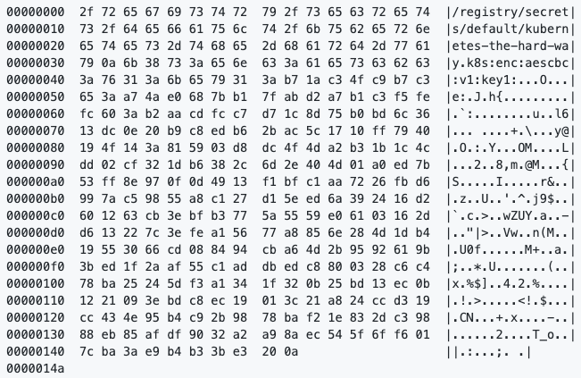
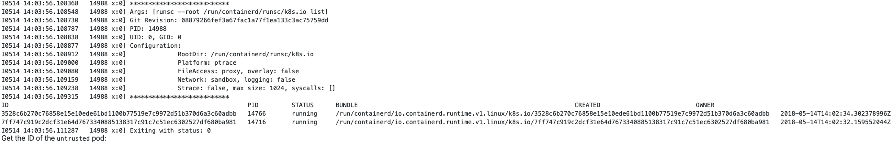

Teste
Criptografia
kubectl create secret generic kubernetes-the-hard-way --from-literal="mykey=mydata"
Demonstração da chave
external_ip=$(aws ec2 describe-instances --filters \ "Name=tag:Name,Values=controller-0" \ "Name=instance-state-name,Values=running" \ --output text --query 'Reservations[].Instances[].PublicIpAddress')
ssh -i kubernetes.id_rsa ubuntu@${external_ip}
sudo ETCDCTL_API=3 etcdctl get \ --endpoints=https://127.0.0.1:2379 \ --cacert=/etc/etcd/ca.pem \ --cert=/etc/etcd/kubernetes.pem \ --key=/etc/etcd/kubernetes-key.pem\ /registry/secrets/default/kubernetes-the-hard-way | hexdump -C
Resultado Esperado
Criando um deploy
kubectl create deployment nginx --image=nginx
kubectl get pods -l app=nginx
Resultado Esperado
| NAME | READY | STATUS | RESTARTS | AGE |
| nginx-ABCDEFGHIJKLM | 1/1 | Running | 0 | 15s |
Port Fowarding
POD_NAME=$(kubectl get pods -l app=nginx -o jsonpath="{.items[0].metadata.name}")
echo "$POD_NAME"
kubectl port-forward $POD_NAME 8080:80
Resultado Esperado
Forwarding from 127.0.0.1:8080 -> 80
Forwarding from [::1]:8080 -> 80
curl --head http://127.0.0.1:8080
Resultado Esperado
HTTP/1.1 200 OK Server: nginx/1.19.2 Date: Tue, 23 Apr 2021 23:50:35 GMT Content-Type: text/html Content-Length: 612 Last-Modified: Tue, 23 Apr 2021 23:50:35 GMT Connection: keep-alive ETag: "5f32b03b-264" Accept-Ranges: bytes
Logs
kubectl logs $POD_NAME
Resultado Esperado
127.0.0.1 - - [23/Apr/2021:23:50:35 +0000] "HEAD / HTTP/1.1" 200 0 "-" "curl/7.29.0" "-"
Executando o pod
kubectl exec -ti $POD_NAME -- nginx -v
Resultado Esperado
nginx version: nginx/1.19.2
Criando o Service
kubectl expose deployment nginx --port 80 --type NodePort
Obtendo a porta do serviço
NODE_PORT=$(kubectl get svc nginx \ --output=jsonpath='{range .spec.ports[0]}{.nodePort}')
echo "$NODE_PORT"
Permitindo acesso remoto a porta
aws ec2 authorize-security-group-ingress \ --group-id ${SECURITY_GROUP_ID} \ --protocol tcp \ --port ${NODE_PORT} \ --cidr 0.0.0.0/0
Obtendo o nome do node
EXTERNAL_IP=$(aws ec2 describe-instances --filters \ "Name=instance-state-name,Values=running" \ "Name=network-interface.private-dns-name,Values=${INSTANCE_NAME}.*.internal*" \ --output text --query 'Reservations[].Instances[].PublicIpAddress')
echo "$EXTERNAL_IP"
Acessando o node pelo IP Externo e a porta
curl -I http://${EXTERNAL_IP}:${NODE_PORT}
Resultado Esperado
HTTP/1.1 200 OK Server: nginx/1.19.2 Date: Tue, 23 Apr 2021 23:50:35 GMT Content-Type: text/html Content-Length: 612 Last-Modified: Tue, 23 Apr 2021 23:50:35 GMT Connection: keep-alive ETag: "5f32b03b-264" Accept-Ranges: bytes
Carga Untrusted
cat <<EOF | kubectl apply -f - apiVersion: v1 kind: Pod metadata: name: untrusted annotations: io.kubernetes.cri.untrusted-workload: "true" spec: containers: - name: webserver image: gcr.io/hightowerlabs/helloworld:2.0.0 EOF
Verificação
kubectl get pods -o wide
Resultado Esperado
| NAME | READY | STATUS | RESTARTS | AGE | IP | NODE | NOMINATED NODE |
| busybox | 1/1 | Running | 0 | 15m | 10.200.0.2 | ip-10.0.1.20 | <none> |
| nginx-abcdefh | 1/1 | Running | 0 | 8m | 10.200.1.2 | ip-10.0.1.21 | <none> |
| untrusted | 1/1 | Running | 0 | 2m | 10.200.2.3 | ip-10.0.1.22 | <none> |
Obtendo o nome do node unstrusted
INSTANCE_NAME=$(kubectl get pod untrusted --output=jsonpath='{.spec.nodeName}')
echo "$INSTANCE_NAME"
Obtendo o IP Externo do Worker
INSTANCE_IP=$(aws ec2 describe-instances --filters \ "Name=instance-state-name,Values=running" \ "Name=network-interface.private-dns-name,Values=${INSTANCE_NAME}.*.internal*" \ --output text --query 'Reservations[].Instances[].PublicIpAddress')
Conectando ssh no Worker
ssh -i kubernetes.id_rsa ubuntu@${INSTANCE_IP}
Listando os containers rodando sobre o gVisor
sudo runsc --root /run/containerd/runsc/k8s.io list
Resultado Esperado
POD_ID=$(sudo crictl -r unix:///var/run/containerd/containerd.sock pods --name untrusted -q)
echo "$POD_ID">
Obtendo o ID do Pod untrusted
CONTAINER_ID=$(sudo crictl -r unix:///var/run/containerd/containerd.sock ps -p ${POD_ID} -q)
echo "$CONTAINER_ID"
Usando o gVisor runsc para mostar os processos rodando dentro do container webserver
sudo runsc --root /run/containerd/runsc/k8s.io ps ${CONTAINER_ID}
exit
Verificando imagens/pods/containers no worker com crictrl
external_ip=$(aws ec2 describe-instances --filters \ "Name=tag:Name,Values=worker-0" \ "Name=instance-state-name,Values=running" \ --output text --query 'Reservations[].Instances[].PublicIpAddress')
echo "$external_ip"
ssh -i kubernetes.id_rsa ubuntu@${external_ip}
sudo crictl -r unix:///var/run/containerd/containerd.sock images
Resultado Esperado
| IMAGE | TAG | IMAGE ID | SIZE |
| gcr.io/google_containers/k8s-dns-dnsmasq-nanny-amd64 | 1.14.7 | 1fppc38454f22 | 10.9MB |
| gcr.io/google_containers/k8s-dns-kube-dns-amd64 | 1.14.7 | 6b049c8e4hhc8 | 13.1MB |
| gcr.io/google_containers/k8s-dns-sidecar-amd64 | 1.14.7 | ac76jj297h8532 | 11.2MB |
| k8s.gcr.io/pause | 3.1 | bd83ph297b861 | 317KB |
sudo crictl -r unix:///var/run/containerd/containerd.sock pods
Resultado Esperado
| POD ID | CREATED | STATE | NAME | NAMESPACE | ATTEMPT |
| 8b604a13657b8 | 2 hours ago | Ready | kube-dns-8382dbec77-b3hj5 | kube-system | 0 |
sudo crictl -r unix:///var/run/containerd/containerd.sock ps
Resultado Esperado
| CONTAINER ID | IMAGE | CREATED | STATE | NAME | ATTEMPT |
| db76ee297b859 | sha256:5d049a8c4eec92b21ca4be399c260166d96569a1a52d497f4a0365bb55c1a18c | 2 hours ago | Running | sidecar | 0 |
| 5d049a8c4eec9 | sha256:db76ee297b8597fc007b23a90619314b8405bb1df6dcad189df0a123a09e7ecc | 2 hours ago | Running | dnsmasq | 0 |
| 5feec37454f45 | sha256:5feec37454f45d060c5f528c7d0bd4958df39e7ffd2e65ae42aae68bf78f69a5 | 2 hours ago | Running | kubedns | 0 |
exit